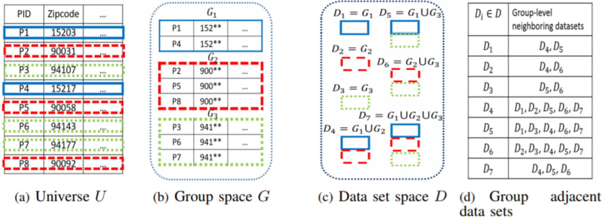
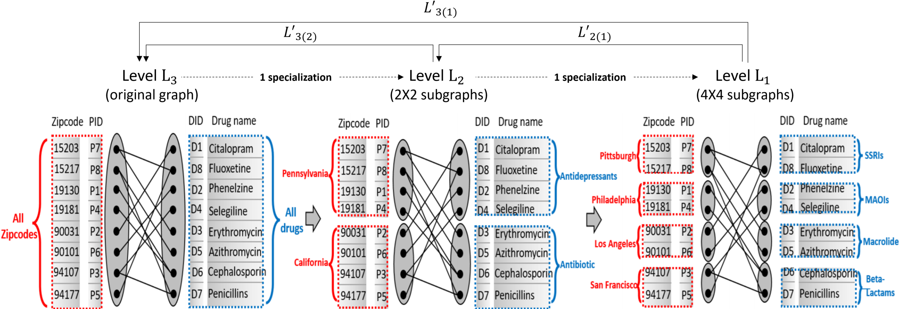

<!DOCTYPE html PUBLIC "-//W3C//DTD XHTML 1.0 Strict//EN" "http://www.w3.org/TR/xhtml1/DTD/xhtml1-strict.dtd">
<html xmlns="http://www.w3.org/1999/xhtml">
<head>
	<title>Free xhtml template - minimalistic-design.com</title>	
	<meta http-equiv="Content-Type" content="text/html; charset=UTF-8" />
	<link rel="stylesheet" type="text/css" href="style.css" media="screen" />
</head>
<body>

	<div id="page">

		<div id="header">
		<h1><a href="#">GroupPriv</a></h1>
			<h2> Group Privacy-aware Disclosure of Association Graph Data</h2>
		</div>

		<div id="wrapper">

			<div id="content">

				<h2>Overview</h2>
				<div id="index_image">
					
				</div>
				<b><big>GroupPriv</big></b> is a new privacy-aware data disclosure scheme that considers group privacy requirements of individuals in bipartite association graph datasets (e.g., graphs that represent associations between entities such as customers and products bought from a pharmacy store) where even aggregate information about groups of individuals may be sensitive and need protection.
				<br /><br />
				We make three original contributions:
				<ul>
					<li>We propose the notion of &epsilon;<sub>g</sub>-Group Differential Privacy that protects sensitive information of groups of individuals at various defined group protection levels, enabling data users to obtain the level of information entitled to them.</li>
					<li>We develop a suite of differentially private mechanisms that protect group privacy in bipartite association graphs at different group privacy levels based on specialization hierarchies.</li>
					<li>We evaluate our proposed techniques through extensive experiments on three real-world association graph datasets and our results demonstrate that the proposed techniques are effective, efficient and provide the required guarantees on group privacy.</li>

				</ul> 
				<br /><br />
				
				<h2>Motivation</h2> 
				<p>
				The traditional differential privacy mechanisms only protect the individual differential privacy.
                The aggregate (statistical) information about individuals may not be safe for disclosure because the aggregate information itself can be sensitive and needs protection. 

                Sensitive information may arise either as:

                <ul>
                	<li>an individual sensitive value indicating an individual’s private information (e.g., did buyer ‘Bob’ purchase the drug ‘insulin’?) in a dataset</li>
                	<li>a statistical value representing some sensitive statistics about a group/sub-group of individuals (e.g., the total number of ‘Psychiatric’ drugs purchased by buyers in a given neighborhood represented by a zipcode).</li>
                </ul>
				</p>

				<br /><br />

				<h2>Group differential privacy</h2> 
				<div>In this work, we extend the conventional notion of differential privacy model to protect group privacy at various group granularity levels. We focus on the scenarios where one needs to protect group-level privacy in addition to individual privacy, where a group consists of a set of individuals. We define the proposed notion of g - group differential privacy by considering adjacent data sets from a group privacy perspective.</div>
				<div id="group">
					
				</div>
				
				<br /><br />

				<h2>Mechanisms</h2> 
				<p>
				Our proposed approach consists of two parts:
					<ul>
						<li>the first part of the proposed approach, namely <i>DiffPar</i> hierarchically partitions and groups the nodes and edges of the given association graph into different levels of granularity of disclosure in terms of group size considering the sensitivity of the formed groups</li>
						<li>the second component of the algorithm, namely <i>DiffAggre</i> performs a bottom-up aggregation and noise injection to guarantee g-group differential privacy in the published dataset</li>
					</ul>
				</p>
				<div id="mechanism">
					
				</div>
				
				<br /><br />

				<h2 id="publications">Publications</h2> 
				<ul>
					<li>Balaji Palanisamy, Chao Li and Prashant Krishnamurthy, "Group Differential Privacy-preserving Disclosure of Multi-level Association Graphs", Proc. of 37th IEEE International Conference on Distributed Computing Systems (<b>ICDCS 2017</b>), Atlanta, USA. [poster] [<a href="http://www.sis.pitt.edu/bpalan/papers/GroupDP-ICDCS2017.pdf">PDF</a>]</li>
					<li>Balaji Palanisamy, Chao Li and Prashant Krishnamurthy, "Group Privacy-aware Disclosure of Association Graph Data", in submission.</li>
				</ul>
				

			</div>

			<div id="sidebar"> 

				<h2>Menu Navigation</h2>

				<ul>
					<li><a href="index.html">Overview</a></li> 
					<li><a href="downloads.html">Downloads</a></li> 
					<li><a href="people.html">People</a></li> 
					<li><a href="index.html#publications">Publications</a></li>
				</ul>

				<h2>Useful Resources</h2>

				<ul>
					<li><a href="http://jmcauley.ucsd.edu/data/amazon/">Amazon product review dataset</a></li>  
					<li><a href="https://labrosa.ee.columbia.edu/millionsong/lastfm">Last.fm songs dataset</a></li>  
					<li><a href="https://grouplens.org/datasets/movielens/100k/">MovieLens 100k dataset</a></li>  
				</ul>

			</div>

			<div style="clear: both;"> </div>

		</div>

		<div id="footer">
			<p>
				Design by <a href="http://www.minimalistic-design.com">Minimalistic Design</a>
			</p>
		</div>

	</div>


</body>

</html>

